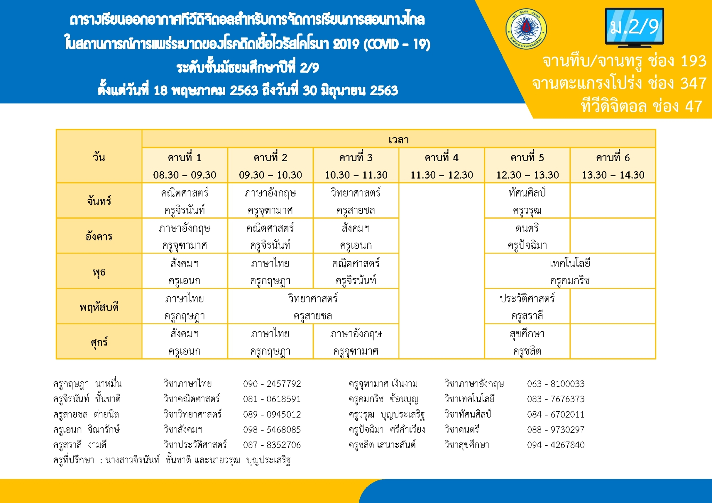

เว็บไซต์ ม.2/9 รร.ชำนาญสามัคคีวิทยา
ข่าวประชาสัมพันธ์ 2/9
ด่วน! 2/9
ทำแบบสำรวจภาย ทำแบบสำรวจคลิกที่นี่ สำหรับห้อง 2/9 เท่านั้น
ตรวจสอบการทำแบบสำรวจ ที่นี่ สำหรับห้อง 2/9 เท่านั้น
เรียนทางไกล ม.2
เว็บไซต์ DLTV
ตารางออกอากาศประจำวัน
ช่องทางการรับชม

ตารางเรียนชั้น ม.2
